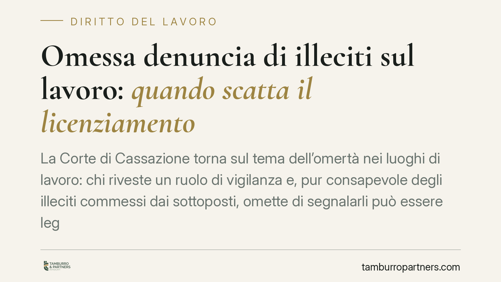

Omessa denuncia di illeciti sul lavoro: quando scatta il licenziamento
La Corte di Cassazione torna sul tema dell'omertà nei luoghi di lavoro: chi riveste un ruolo di vigilanza e, pur consapevole degli illeciti commessi dai sottoposti, omette di segnalarli può essere legittimamente licenziato. L'inerzia viene equiparata a una violazione dell'obbligo di fedeltà. La questione tocca dirigenti e preposti, sia nel pubblico sia, per analogia, nel privato.

Il caso e una premessa di metodo
La vicenda riguarda un dirigente che, informato di condotte illecite poste in essere da personale a lui sottoposto, non ha attivato alcuna segnalazione. Il datore di lavoro ha ritenuto tale silenzio incompatibile con la posizione di garanzia propria del ruolo e ha proceduto al licenziamento.
Una precisazione doverosa: gli estremi esatti della pronuncia (numero di sezione e data di deposito) vanno verificati sulla massima ufficiale prima di assumerli come precedente consolidato. Il principio di diritto, tuttavia, si inserisce in un orientamento già noto, che qui analizziamo nella sua portata interpretativa.
Inquadramento normativo
Nel lavoro privato il riferimento è l'art. 2105 del codice civile, che impone al lavoratore l'obbligo di fedeltà. La giurisprudenza ne ha da tempo ricavato non solo divieti (non concorrere con il datore, non divulgare notizie riservate), ma anche doveri di comportamento positivi, strumentali alla tutela dell'interesse aziendale.
Se la vicenda decisa attiene al pubblico impiego — ipotesi frequente quando è coinvolto un dirigente di un'amministrazione — il quadro si arricchisce. Si applicano infatti il D.Lgs. 165/2001 e i codici di comportamento adottati dalle singole amministrazioni, che pongono in capo ai dirigenti specifici obblighi di vigilanza e di attivazione a fronte di irregolarità. In questo caso l'art. 2105 c.c. opera come clausola di chiusura e principio di raffronto, non come norma primaria.
Va inoltre richiamato il D.Lgs. 24/2023, che disciplina la protezione di chi segnala illeciti (whistleblowing). La normativa tutela il segnalante e, al contempo, rafforza l'idea che l'ordinamento favorisca l'emersione delle condotte illecite, non il loro occultamento.
Perché la distinzione tra azione e omissione non salva
Il punto centrale è questo: l'obbligo di fedeltà non si viola solo facendo qualcosa di vietato, ma anche omettendo ciò che il ruolo impone di fare. Chi esercita funzioni di direzione e controllo assume una posizione di garanzia: non è un collega qualunque, ma il soggetto deputato a presidiare la regolarità dell'attività altrui.
Di conseguenza, il silenzio consapevole su illeciti rilevanti non è una condotta neutra. È un'omissione che frustra l'interesse del datore e tradisce proprio la funzione per cui quel ruolo esiste. Non serve la partecipazione attiva all'illecito: basta la rinuncia a intervenire.
Consapevolezza effettiva, non sospetto generico
Il principio ha un limite preciso. L'addebito presuppone la consapevolezza effettiva dell'illecito, non il semplice sospetto o la vaga percezione di qualcosa che non va. Pretendere la denuncia su basi incerte trasformerebbe il dovere di fedeltà in un obbligo investigativo improprio.
L'onere di dimostrare che il lavoratore sapeva — e che, sapendo, è rimasto inerte — grava sul datore di lavoro. Si tratta di una prova non banale, che deve fondarsi su elementi concreti e non su ricostruzioni congetturali.
Proporzionalità della sanzione
Anche accertata l'omissione, il licenziamento non è automatico. Resta fermo il principio di proporzionalità: la sanzione espulsiva è legittima solo quando la gravità della condotta omissiva, letta alla luce del ruolo e dell'entità degli illeciti taciuti, rende impossibile la prosecuzione del rapporto. Per inadempimenti di minore spessore restano le sanzioni conservative.
Implicazioni pratiche
Chi ricopre ruoli di vigilanza — dirigenti, preposti, responsabili di area — è esposto a un rischio specifico: rispondere non di ciò che fa, ma di ciò che non segnala. Il margine tra riservatezza e omertà, in queste posizioni, è più stretto che per gli altri lavoratori.
Cosa fare in concreto
- Verifica se il contratto, il codice disciplinare o il codice di comportamento prevedono espressi obblighi di segnalazione legati al tuo ruolo.
- Formalizza sempre per iscritto le segnalazioni di irregolarità, conservando prova della data e del destinatario.
- Attiva i canali di whistleblowing previsti dal D.Lgs. 24/2023 quando disponibili: tutelano il segnalante.
- Distingui tra sospetto e conoscenza effettiva, documentando ciò che sai e le fonti da cui lo apprendi.
- Se ricevi una contestazione per omessa denuncia, è opportuno un confronto con un legale prima di rendere giustificazioni.
Disclaimer
Contributo informativo a cura di Tamburro & Partners - Avv. Giuseppe Tamburro. Non costituisce parere legale.
Ogni storia di lavoro ha i suoi tempi.
Se gestisci HR e vuoi un confronto su contenzioso, ispezioni o licenziamenti, scrivi allo studio. Ti rispondiamo entro un giorno lavorativo.